2026 年新闻动态（122 篇）
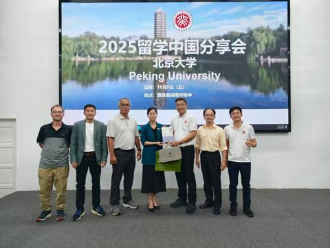
北大近在咫尺，未来由你定义
今天的高二、高三升学分享会特别邀请到 北京大学马来西亚校友会 亲临南华独中！讲堂内座无虚席，同学们认真聆听、踊跃互动。 从北大未名湖畔的学习日常，到具体的留华奖学金与申请秘秘籍，这场分享会不仅开拓了同学们的国际视野，更点燃了大家追逐卓越的决阅读全文 →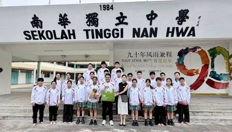
战袍加身，鼓动风采
感谢霹雳州行政议员 YB 吴家良 今早亲临南华独中，为本校二十四节令鼓队送上专属“坚守希望”战袍夹克！ 南华鼓队凭作品《猪仔船》披荆斩棘晋级“霹雳州鼓节”，这份心意是对队员们最大的肯定。披上战袍，我们继续击鼓前行！ 关注南华独中官方脸书：h阅读全文 →转发·社会责任责任行动计划 之千里有“鸢”一线牵
社责行动对象：港口革成华小阅读全文 →转发·社会责任责任行动计划
书法中的乐趣 社责行动对象：港口革成华小阅读全文 →转发·社会责任责任行动计划 之千里有“鸢”一线牵
社责行动对象：港口革成华小阅读全文 →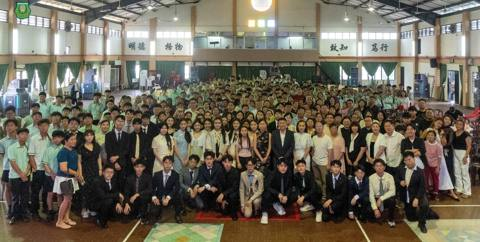
风华落笔 · 行之有度 · 抬望湛蓝天空
董家教师齐祝南华高三生成年不负韶华 （曼绒4日讯）曼绒南华独中于近日一连举办会考祈愿大会与成年礼两场庄严盛大的仪式，为即将步入考场的考生祈愿，同时也为高三礼生行加冠受笄礼，由董家教师生以及特邀高三礼生家长到场见证。 高三礼生身着礼服进场后，阅读全文 →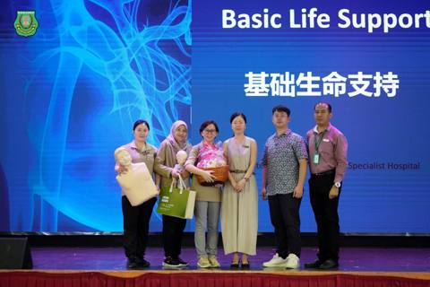
KPJ专业医护团队手把手教急救
南华师生分秒守护生命 “🫀拉开生死差距的未必是医生， 可以是身边一双受过训练的手 🙌。” 今日上午，KPJ斯里曼绒专科医院医护团队受邀至南华独中，为全校师生主讲基础生命支持（BLS），从心肺复苏、AED到哈姆立克法，理论与实操一次到位。临近阅读全文 →南华独中90年校庆 文艺大汇演
精彩表演回顾影片 之五 马来传统武术 《武道·修心 Seni Silat》 一场刚柔并济、以武修身的马来传统文化艺术礼赞，正悄悄改写师生对共处多年的友族同胞印象。表演创新之处在于将优雅的舞姿律动（Gerak Tari）与刚劲的招式套路（Ju阅读全文 →本校诚贺实兆远中秋青年市集
盛大举办 · 圆满落幕｜为在地文娱注入新活力 南华独中校友 兼 领袖会前骨干成员 池凯萱 担纲市集筹委会主席，携手学弟妹，从前期策划、跨部门协调至连续三天的现场统筹，亲力亲为操办每处细节，带领团队展现担当与领导力，深刻体现 “学会读书 ·阅读全文 →2026 年 9 月校园动态
南华独中90年校庆 文艺大汇演
精彩表演回顾影片 之四 印度传统舞蹈 《太阳与月亮 Chanthirane Sooriyane》 在日月见证下，一场打破世俗羁绊、在天地间肆意绽放的热血颂歌即将上演。 本舞蹈取材自经典泰米尔乡村民歌《Chanthirane Sooriyan阅读全文 →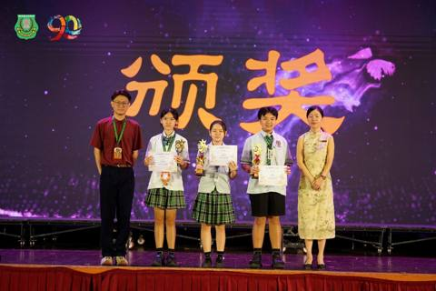
喜传捷报
恭喜本校学生在全霹雳华文独中第30届华语艺术歌曲歌唱比赛暨第9届华语诗歌朗诵比赛中传来喜讯 同学们在文艺歌曲比赛中放异彩，荣获佳绩，为校争光 ------ 初中男生组季军：龚嘉乐同学 曲目：《苏罗河之恋》 高中女生组季军：蔡旌慧同学 曲目：阅读全文 →南华独中90年校庆 文艺大汇演
精彩表演回顾影片 之三 SMK Seri Manjung Gema Warisan 鼓乐舞蹈团 Paluan Bertingkah dan Lenggang Zapin Kampung Melayu 《鼓韵流芳·杂糅扎宾》 这是一场穿梭于传阅读全文 →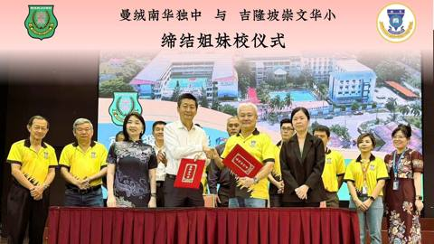
南华独中赴吉隆坡 · 缔结两所华小姐妹校
格局决定方向，信任编写教育共同体诗篇 曼绒南华独立中学日前赴吉隆坡，一日之内接连走访崇文国民型华文小学、安邦国民型华文学校。南华独中继2022年后与崇文华小于四年后再度签署协议，深化两校姐妹校情谊；与此同时，与安邦华小开拓新格局，首度缔结姐阅读全文 →南华独中90年校庆 文艺大汇演
精彩表演回顾影片 之二 南华独中舞蹈团 《柔暖》 这是一曲以生命治愈为底色的校园生命礼赞颂歌。通过拟人化“某种动物”视角，将目光对准校园角落里的灵动生命，深刻诠爱与羁绊中彼此承受的轻与重。 舞姿参考了“该生物”的肢体语汇，舞蹈员在音乐响起之阅读全文 →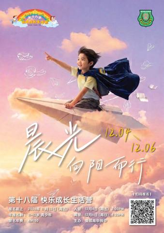
晨光 · 打开新的可能·曼绒南华独中 第18届快乐成长生活营
穿透云层的第一束光，照亮不只前方路， 更是心里潜藏的好奇、勇气与无限可能！ 从童年迈向青春，11–13岁的你，正站在全新起点的门前。这里不需要掩饰天真，更鼓励你释放独特的想法与活力！在晨光中相遇，在探索中欢笑，在尝试中蜕变——见证一个更勇敢阅读全文 →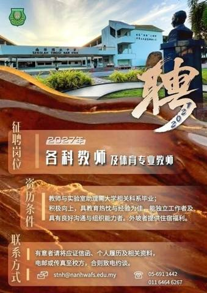
高薪聘请·2027年·各科教师 & 体育专业教师
本校因校务发展，高薪聘请对 教育改革 人文素养 专业能力 在职进修与 个人提升充满热忱的您 加入本校师资团队。 有意者请将应征信函、个人履历表及相关资料电邮或传真至校方， 合则致电约谈。 电话：05 - 691 1442 / 011 - 6阅读全文 →南华独中90年校庆 文艺大汇演
精彩回顾（一） 南华独中舞蹈团 《共鸣辉》 本舞蹈紧扣校庆主题“艺汇南华·共鸣大地”。旨在通过曼妙舞姿与柔美身段结合南洋意象，聚焦而辐射出九十载办学的光辉岁月，展现多元文化交融的生命力。 舞蹈以南洋标志性传统织物Selendang（特译为“阅读全文 →有些路是前人一步步走出来的；有些坚持，跨越时代依然闪耀
2026华教节序幕礼——华教运动舞台剧《初心》巡演正式来到南华独中！这不仅是一场演出，更是一场属于今天的回望。诚邀各位家长、校友及各界华教同路人走进大礼堂，共赴这场文化与精神的盛会。阅读全文 →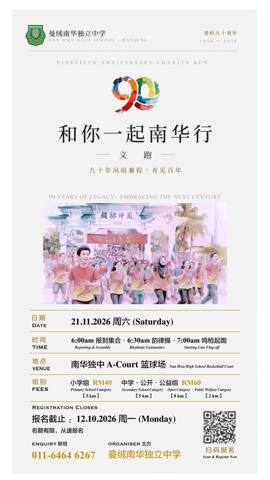
90周年校庆压轴活动来啦
“和你一起南华行” 义跑火热接受报名 九十年风雨兼程 · 育见百年 邀请全校董家教师生校友、各界好友与南华人，一起从90南华行迈开双脚，整装前行不慌不忙，披星戴月无怨无悔，齐步朝南华百年出发！ 活动详情 日期：2026年11月21日（周六）阅读全文 →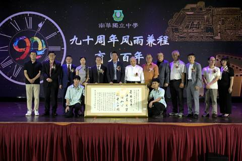
南华独中办创校90年校庆典礼
获书法家赠墨宝还原独中复兴运动史原貌 数码刊物馆、历史壁画走廊、清逸茶别院 同日启动开幕 （曼绒4日讯）霹雳曼绒南华独立中学予日前举行创校九十周年校庆典礼暨校友回校日，全校空间开放供校友与嘉宾参观，大礼堂典礼以群狮迎宾及二十四节令鼓表演《鼓阅读全文 →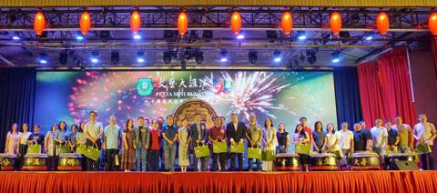
艺汇南华共鸣大地 跨越族群凝聚社区
颜氏家族1对1配对捐献 90周年校庆大汇演筹获逾131万 霹雳曼绒南华独立中学隆重举办90周年校庆系列核心盛会《艺汇南华・共鸣大地》文艺大汇演，于8月29日晚上7时举行。本次汇演不仅依循“跨文化、跨语言、跨民族”主旨邀得曼绒县四所不同源流国阅读全文 →转发📬 · 来自文化大汇演表演学生家长的诚挚分享
感谢家长以敏锐且深刻的视角，分享南华独中90周年庆暨2026年文艺大汇演的台前幕后全貌。 关注南华独中官方脸书：阅读全文 →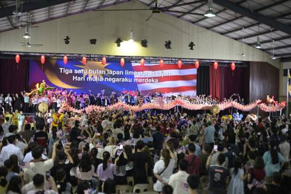
Selamat Hari Kebangsaan ke-69! 祝大马第69届国庆日快乐
“Tiga satu bulan lapan lima puluh tujuh...” 响亮的歌声，唱出我们对这片红黄蓝白土地最真挚的爱！日前在南华90周年校庆大汇演的舞台上，独中、国中、国小与印小的同学们同台合唱《Tanggal 31》，阅读全文 →【转发家长视角 📹】镜头下的《Tanggal 31》全场大合唱，现场氛围震撼又令人感动
29/8 南华90周年校庆大汇演上，独中、国中、国小与印小的孩子们同台高唱，用歌声交织出对这片土地最纯粹的爱。 南华独中祝全体大马人：第69届国庆日快乐！Selamat Hari Kebangsaan ke-69! 愿多元共融，国家繁荣昌盛阅读全文 →南华90年校庆 从独中复兴走向AI转型
颜登逸董事长：打造符合时代需求的教育 ——《东方日报独家采访》阅读全文 →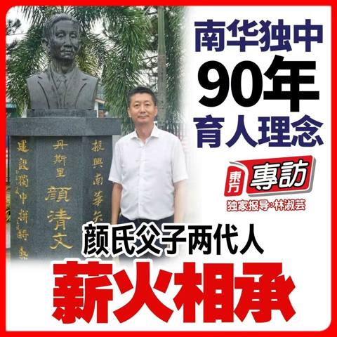
东方日报独家专访·南华90年 从独中复兴走向AI转型
颜登逸：打造符合时代需求的教育阅读全文 →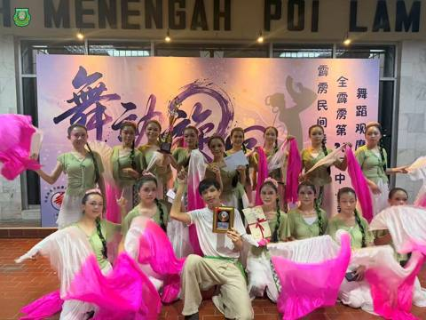
南华独中舞蹈团脚踏轻盈猫步
摘下第26届全霹雳中小学舞蹈观摩赛金奖 本校舞蹈团《柔暖》是一支糅合传统水袖扇与拟猫的舞蹈，舞蹈员化身为一只只冷眼俯瞰校园的野猫，在日复一日的善意中渐渐收起了尖锐的爪牙，从此校园中经常随处可见它们柔软的身姿与师生心目中最暖心的陪伴。 铁打的阅读全文 →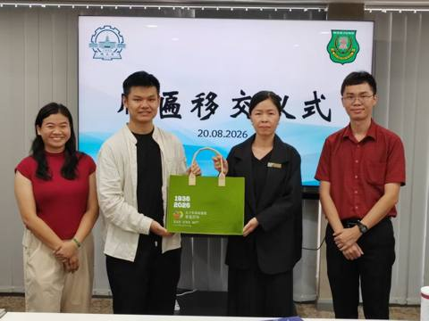
一纸合约，一面牌匾·化作南华学子就读世界顶尖理工学府张张门票
中国哈尔滨工业大学（HIT）马来西亚海外教育中心代表到访曼绒南华独立中学，正式移交“国际学生生源基地”牌匾，由校长陳麗冰博士接领，辅导处主任叶佳盛老师见证，随即挂上本校“合作机构”墙上，补上升学世界顶尖理工学府升学通道的最后一砖。 2025阅读全文 →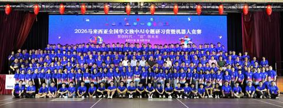
曼绒南华独中承办AI专题研习营暨机器人竞赛
主题“智创时代 · ‘迎’领未来” 全国24所独中174名学生五天四夜同场竞技 2026年马来西亚全国华文独中AI专题研习营暨机器人竞赛，8月21日至25日于霹雳曼绒南华独立中学举行，为期五天四夜。开幕典礼于8月22日上午11时在该校大礼堂阅读全文 →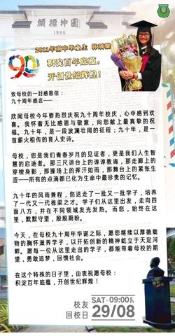
2011年南华独中毕业生 林瑀璇
致母校的一封感恩信：阅读全文 →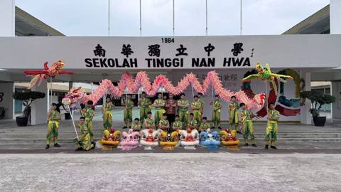
祥龙瑞凤，点亮南华
8月11日，南华独中龙狮团于篮球场隆重举行点睛仪式！本次顺利为 1尊祥龙 与 2尊瑞凤 开光赋灵，龙飞凤舞，气势冲天！ 特别致谢点睛嘉宾： ▪️ 学校董事 林道祥先生 ▪️ 龙狮团负责老师 Sharil 老师 ▪️ 龙狮团学生代表 罗伟桐同阅读全文 →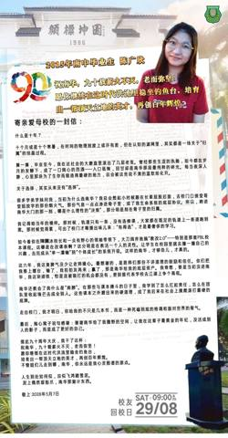
2015南华独中毕业生 陈广欣
寄亲爱母校的一封信——阅读全文 →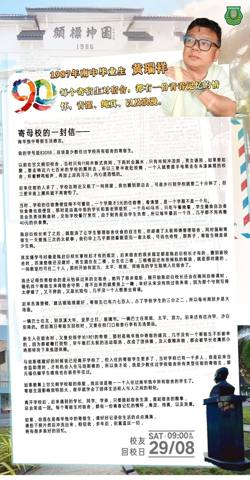
1987年南中毕业生 黄瑞祥
寄母校的一封信——阅读全文 →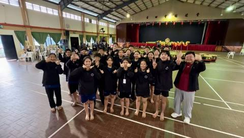
战袍加身，鼓志昂扬
热烈祝贺南华独中二十四节令鼓队在 《霹雳州·鼓节》暨2026年第三届吴家良杯全霹雳中小学二十四节令鼓邀请赛 中斩获佳绩！ 为表扬与鼓励参赛队员、顾问老师及教练的辛勤付出，鼓队团员家长马先生特于 7 月 28 日慷慨赞助 27 件专属战袍外套阅读全文 →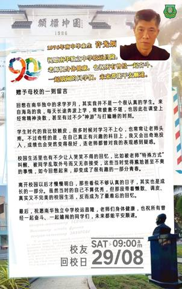
1976年南中毕业生 许光炳
赠予母校的一则留言 回想在南华独中的求学岁月，其实我并不是一个很认真的学生。来自海岛的我，每天长途奔波上学，常常疲惫不堪，也因此在课堂上经常精神涣散，甚至有过不少“神游”与打瞌睡的时刻。 学生时代的我比较赖皮，很多时候对学习不上心，也常常让阅读全文 →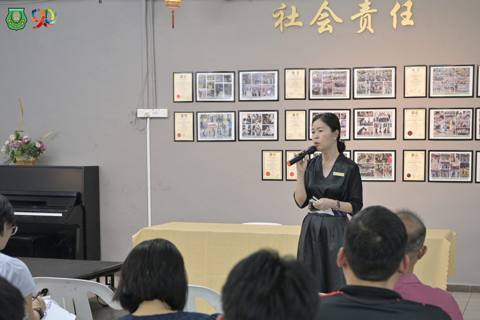
携手八华小·美美与共
南华独中启动社会责任行动2.0 “做知识的传授者，更要做引导孩子坚守文化的‘提灯人’。” 日前，南华独中与曼绒县八所华小正式签署《2026年社会责任行动计划2.0合作备忘录（MOU）》。签约现场去繁文缛节，直奔需求对接，共同敲定跨校资源整合阅读全文 →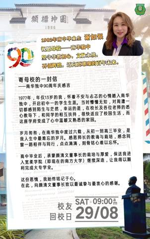
1982年南中毕业生 谢如银
寄母校的一封信 ——南华独中90周年庆感言 1977年，年仅13岁的我，怀着不安与忐忑的心情踏入南华独中，开启初中一的学生生涯。当时懵懂无知，对周遭一切都感到陌生与茫然，幸运的是，在校长及各位老师的悉心教导下，和同学的相互扶持，很快适应了校阅读全文 →与作家的下午茶：诗意流淌，薪火相传
“文字是富有温度的，如微光照亮微光，以心灵碰撞心灵。” 今日（7月31日）上午，南华独中讲堂B诗意弥漫。学校特别邀请到 胡清朝、王涛、方路、胡复兴 四位重量级马华诗人走进校园，与高一及高二全体师生展开了一场关于生命的对话与诗歌分享。 前人倾阅读全文 →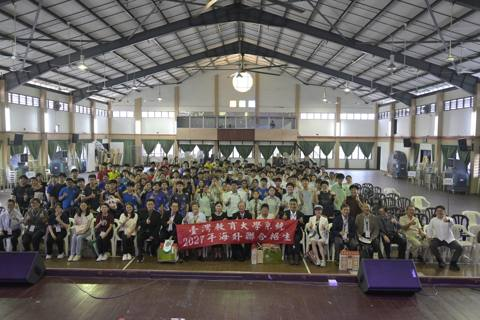
拓宽升学视野，直通台湾名校
台湾教育大学系统交流团队莅临南华独中！由台湾前教育部部长吴清基教授领衔，携带国立台中教育大学、国立嘉义大学、国立台南大学以及国立东华大学代表亲临现场，为高中生带来第一手海外升学与科系资讯 感谢宣讲团队的精彩分享，祝愿南华学子勇敢追梦，开创广阅读全文 →南华90周年系列之薪火相传 🌟 从“南华学姐”到“南华老师”的温馨蜕变
“因为热爱教学，看到学弟学妹们有所收获，就是我最大的成就感。” 今年，南华独中的教师团队迎来了一股年轻的活力，而这位新晋老师，正是我们的毕业学姐——林继萱老师！时隔十几年，林老师选择回到家乡，重返陪伴她度过青春岁月的地方。这一次，她换了身份阅读全文 →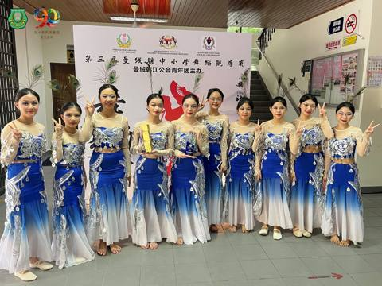
喜报！南华独中舞蹈团县级赛斩获双料大奖
7月25日，由曼绒韩江公会青年团主办的第三届曼绒县中小学舞蹈观摩赛于古田会馆大礼堂圆满落幕！ 我校舞蹈团凭精彩作品《莲境雀灵》在强手如林的赛场中脱颖而出，一举囊括： 金奖 最佳服装奖 华丽舞姿勾勒莲境灵韵，精美服饰展现孔雀风采！台上一分钟，阅读全文 →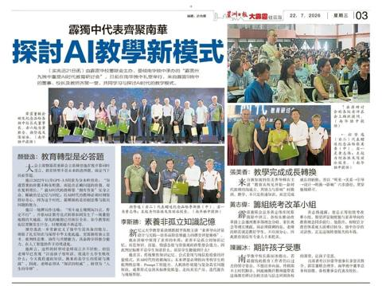
霹独中代表齐聚南华·探讨AI教学新模式
《星洲日报》22-7-2026阅读全文 →独中重塑AI时代教育研讨会
300老师探讨教育转型 培养学生提问能力—— 《中国报》19-07-2026阅读全文 →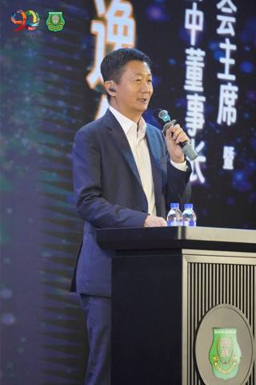
霹雳董联会号召独中教师共探AI教育
近三百位教师齐聚南华独中 在答案贬值前学会下“对的”指令 （曼绒19日讯）由霹雳华校董事联合会主办、曼绒南华独立中学承办的"霹雳州九独中重塑AI时代教育研讨会"，7月18日在南华独中礼堂举行。霹雳州各所独中董事、校长及教师齐聚一堂，共同直面阅读全文 →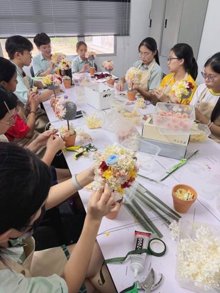
南华日常：用匠心，种下一棵“永生花许愿树”
在南华独中，美育不是一蹴而就的活动，而是融入日常的长期修行。 每周的花艺选修课，是属于南华学子的“匠心慢时光”。穿上专业围裙，从理花、配色到塑型，孩子们在长期的课程熏陶中，将细腻的耐性注入创作。这期精美的【永生花许愿树】，不仅展现了扎实的手阅读全文 →霹雳州九独中重塑 AI 时代教育研讨会
主办单位：霹雳华校董事联合会 承办单位：曼绒南华独立中学 日 期：2026年7月18日（星期六） 报 到：8am 研 讨 会：9am-5pm 地 点：南华独中礼堂 面对生成式人工智能对传统教学模式的冲击，教育改革必须思考，教师如何从碎片化与阅读全文 →《校园安全背后，教育价值失序》校长陳麗冰博士
“教育最大的成功，从来不是让一个孩子考进世界名校。而是让每一个孩子，在人生最黑暗的时刻，仍然相信生命值得继续，相信世界值得信任，相信自己无需用一把刀来证明自己的存在。 ”——节录自原文阅读全文 →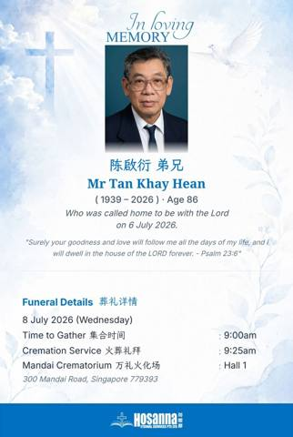
沉痛哀悼南华独中老校长陈启衍先生
怀着万分沉痛与不舍的心情，我们悼念南华独中老校长陈启衍先生与世长辞，安息主怀。 陈校长一生奉献教育，春风化雨，桃李满天下。在担任南华独中校长期间，他秉持「有教无类、作育英才」的教育理念，恪尽职守，勤勉治校，为学校的发展奠定了坚实基础，也为无阅读全文 →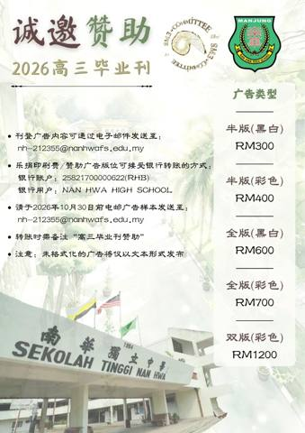
敬致：社会贤达，商家宝号
诚邀赞助曼绒南华独中2026年度毕业刊 此次筹款活动旨在为本届毕业刊筹集资金，以完成这本承载学生六年回忆的重要纪念册。由于经费有限，本会诚挚地向社会各界热心人士及企业寻求支持。若各位愿意伸出援手，助力学子圆梦，我们将不胜感激。 刊登广告的费阅读全文 →每年最期待的南华传统，今天依旧温馨满格
2026年南华独中家长会圆满举行！今年我们延续传统，没有冗长的官方报告，直接把舞台交给最懂孩子的班导师们——各班分享会里满是面对面的专注与感动；展厅里，一件件手工作品是孩子们最自豪的成长答卷；轻松的小吃会上，更塞满了家校同行的欢声笑语。 课阅读全文 →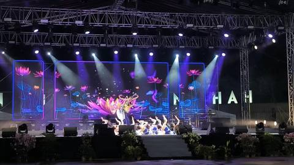
南华独中闪耀舞台
！喜获华族舞蹈金奖！ 狂贺！在由马来西亚旅游、艺术及文化部（MOTAC）主办的 Festival Budaya Malaysia 2026 中，南华独中舞蹈团于怡保 Bulatan Sultan Azlan Shah 凭借精湛舞艺脱颖而出，阅读全文 →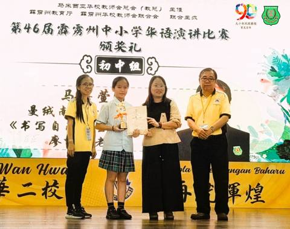
初战摘誉 🌟 南华独中马嘉萱同学
州级华语演讲比赛 🎤 载誉而归 在刚刚落幕的第46届霹雳州中小学华语演讲比赛中，代表本校出战的初中一 马嘉萱 同学在强手如林的激烈角逐中脱颖而出，荣获初中组第四名！ 执笔为剑：书写自己的生命篇章 作为首次登上州级演讲舞台的“新将”，马嘉萱同阅读全文 →
课本之外的南洋史诗：南华师生吉隆坡寻根手记
这两天，南华独中的10位同学在联课处老师的带领下，暂时放下紧凑的课业节奏，跨越山海，来了一场轻装上阵却分量十足的华人文化之旅。在大马华社的核心历史坐标间，青年学子们用脚步丈量历史，用视线触碰先辈扎根南洋的峥嵘岁月。 四大展馆的时光对谈 从隆阅读全文 →
一盏清茶，一片匠心
在今天的茶文化选修课上，南华独中的同学们不仅亲身体验了传统泡茶与品茶的宁静雅致，更发挥创意，将泡茶后的茶叶渣晒干，巧手绘制成一幅幅独特的“茶叶画”！ 从舌尖的品味走向纸上的艺术，同学们在实践中完美融合了中华茶文化、美学教育与环保理念。为兼具阅读全文 →
祝贺陳麗冰校长荣获 HRD Corp 认证讲师资格（Accredited Trainer）
卓越教育，领航先行！陈校长通过国家级严格审核，不仅是个人的专业荣耀，更是南华独中师资走向专业化、国际化的重要里程碑。 迈入 2026 年，陈校长将以此专业赋能团队，亲自规划高水准的校内教职员培训，并开拓更多跨界教育合作，为南华注入源源不绝的阅读全文 →
狂澜尽处见曙光·南华独中廿四节令鼓队
总决赛斩获佳作奖 在刚刚落幕的第三届YB吴家良杯中小学邀请赛总决赛中，南华独中廿四节令鼓队凭着震撼人心的剧目《猪仔船》，在强手如林的激烈角逐中脱颖而出，荣获总决赛佳作奖（第四名）！ 剧情震撼：重温华工南来的血泪史 《猪仔船》取材自早期华工南阅读全文 →
第四届学生领袖训练营·承光篇
专题讲座系列报导之四 校长陳麗冰博士：从独中精神看文化自信与公共责任 南华独中的孩子刚捧着从安焕然教授播撒的一段两百年华教史的文化种子，校长陳麗冰博士在次日的讲座中即刻搭建了一个未来沙盒世界：在2050年全国独中乃至于华教正面临着存亡之际。阅读全文 →
您用厚实的肩膀，托起孩子在南华的每一天
致所有默默付出、撑起家庭与孩子梦想的超人爸爸们，父亲节快乐！阅读全文 →
第四届学生领袖训练营·承光篇
专题讲座系列报导之三 安焕然教授—— 从陈嘉庚到南侨机工，青年担当从未缺席 "南洋社会造就了陈嘉庚，而陈嘉庚也滋养和改造了南洋华侨华人社会。"上述言论引援自前辈学者的定论，同时也正式打开了第四届学生领袖训练营·承光篇专题讲座系列第三场的格局阅读全文 →
端午惊喜快闪
当传统端午撞上创意手作，这抹校园温馨，你愿意收下吗？ 由本校 联课处 精心策划的端午节快闪活动🏫突袭校园，在紧凑的课业📚间隙中，为全体师生带来了一场轻松不乏温馨✌️的节日体验！ 活动现场，由同学们亲手制作的🎋“毛线粽子”悄然亮相。🎊五彩斑斓阅读全文 →
南华独中90周年校庆校运会特设小学田径邀请赛
3大源流11所小学百名健儿聚首同台竞技 （曼绒15日讯）配合创校90周年系列活动，曼绒南华独立中学于6月13日隆重举行第23届校园运动会。本届赛会特别增设小学田径邀请赛，成功吸引曼绒县内华小、国小与淡小三大源流共计11所小学的百名健儿同台切阅读全文 →
南华独中 | 家长会·一场爱与成长的邀约
学校的教学楼前，绿意正浓；教室里，满载着梦想。在这正是读书日的好时节里，南华独中向各位关心孩子成长的家长发出最诚挚的邀请—— 南华独中·家长会！ 为什么我们希望您来？ 这不仅是一场会议，更是一次温暖的相聚： 1️⃣ 与校方对话： 深入了解学阅读全文 →
惊天逆转！2026年南华独中运动会完美落幕
加分赛、田赛结束，红队积分一路领跑、优势尽显！ 但不到最后一刻，胜负绝未定 —— 黄队在径赛顶住巨大压力，奋起直追，最终以些微优势完成惊天大反超，勇夺全场总冠军！ 红队的强大与顽强，激发出黄队的无限潜能。这场属于全体南华健儿的热血激战，没有阅读全文 →
田赛激情，今日燃爆
南华独中校园运动会田赛项目圆满落幕！ 今天，我们见证了跳远、跳高、铅球、铁饼、标枪选手的卓越表现。赛场上飞扬的身影，每一次跨越、每一次投掷，都凝聚着汗水与努力。 目前排名：红队暂时领先 🥇，黄队紧随其后 🥈，蓝队位列第三 🥉。 精彩继续！ 阅读全文 →
见证历史！尘封26年的校运会纪录在今天被刷新了
在今天女子乙组（13-15岁）跳高赛场上，来自蓝队的 陈佳纹 同学以 1.30米 的惊人成绩，成功打破了由黄玲媚校友在2000年创下并保持至今的 1.27米 大会纪录！ 这珍贵的3厘米，南华等待了足足26年！跃过的是横杆，刷新的是历史！让我阅读全文 →
热身赛全开！南华色队得分战已经打响！师生齐心，势如破竹
为 13/6 的正式运动会预热，我们的老师和学生们已经在赛场上全力以赴！ 不论是我们的老师还是学生，在加分赛中，只要达到 400米、跳远或铅球 的最低标准，就能为你的色队赢得宝贵分数！ 每一个动作都可能是胜利的关键，每一次尝试都在书写传奇！阅读全文 →
陳麗冰校长受邀分享马来西亚华文教育史
【西安讯】在“西安电子科技大学—马来西亚教育科技人才战略联盟成立暨签约仪式”上，本校校长陳麗冰博士受邀代表霹雳州九所华文独立中学校长发表专题演讲，以《南洋土地上的文化坚守——马来西亚华文教育两百年的壮丽史诗》为题，向中国教育界讲述马来西亚华阅读全文 →
捷报！南华管乐队“春蕾”再夺金奖
2026年6月4日，我校管乐队前往槟城 Dewan Sri Pinang 参加《Festival Kesenian Muzik 2026（春蕾）》音乐节。团员们凭借参赛曲目《Majestia》的精彩演绎，以气势磅礴的完美配合震撼全场！ 二次阅读全文 →
南华独中🚂💨校友回校日：时光列车启程
日期： 8月29日 (SAT) 地点： 南华独中 主题： 校友回校时光列车 穿越时光✨重返青春现场 南华独中校友回校时光列车」正式发车。从90周年校庆典礼到旧时教室的朗朗书声，从重温学生食堂的《食光如昨》，到大礼堂的文艺大汇演。这一天，让我阅读全文 →
第四届学生领袖训练营 · 承光篇
专题讲座系列报导之二：萧婉思博士 当选择无法两全 与 谁该分到最大的蛋糕 "最难的从来不是选择本身，而是你必须承担选择背后的代价。"截自《当选择无法两全》 "真正困难的不是选哪一边，而是在做选择时，你究竟代表谁在说话。"截自《谁该分到最大的阅读全文 →
严正声明：提防诈骗，慎防赊账订购商品
近日，本校接获曼绒本县市店家老板反映，有不法分子以通讯软体WhatsApp（手机号011 3794 9748）冒称“南华独中老师”之名义联系店老板，算准店老板不在店里驻守的期间，谎称已经上门确认货品决定赊账订购大量货品，企图借机行骗。校方已阅读全文 →
南华独中 2026年 第四届 学生领袖训练营(承光篇)
专题讲座系列报导之一 认知、格局、开悟与进化力 每年南华独中学生领袖训练营都会有一场由董事长颜登逸先生亲临主讲，主题范围正是“领袖素养 ”，而今年则以《AI时代：决定未来的进化力》为题，为参营学生系统阐述一套足以穿越时代的竞争力底层框架——阅读全文 →
感恩有您 • 承光而行，见证孩子的格局与蜕变
在第四届高阶领袖营“承光篇”落幕后，校方收到了来自营员家长 Janice Ting 非常令人动容的长文回馈。 看到孩子在三天两夜里，不仅学习知识，更学会了责任与担当，甚至对妈妈说出：“我对未来的方向更加明确与清晰了”…… 这番话，让我们深深阅读全文 →
2026年 第23届 南华独中运动会
暨 小学田径邀请赛 九十年风雨兼程 育见百年 用汗水诠释运动的纯粹，以拼搏礼赞成长的力量。体育不仅仅是速度与力量的角逐，更是坚韧意志与团队精神的展现。在南华独中这片承载着九秩奋斗记忆的土地上，今天我们将共同见证运动健儿的全力以赴。本届盛会不阅读全文 →
南华独中第四届高阶领袖营“承光篇” 落幕
汇聚名师智慧 全方位淬炼未来领袖认知与格局 （曼绒26日讯）南华独中第四届学生领袖训练营（高阶版·承光篇）于5月21日至23日举行，历经三天两夜的深度学习，四十余名南华学生领袖在九位讲师的倾心引领下，经历了一场从认知、格局到灵魂的全方位淬炼阅读全文 →
感恩有您 • 见证成长
在刚刚圆满结束的领袖训练营中，我们非常开心看到孩子们收获了满满的蜕变。收到来自营员“霓霓”家长的温馨分享，字里行间都是满满的感动： 家长分享原文： 「感谢校方为孩子们带来这么有意义的活动 霓霓第二年有幸参与，真的明显感觉到她成熟稳重了不少。阅读全文 →南华独中 2026年 第4届
学生领袖训练营特邀讲师 Yun Ysi Siew 为本次营会带来了两场互动式哲学思辨活动—— 《当选择无法两全：困境中的对与错》以及 《谁该分到最大的蛋糕？——公平、资源与正义的思辨课》。Updated May 24, 2026 8:41:阅读全文 →
通告：2026年马来西亚华文独中AI专题研习营暨机器人竞赛开始接受报名
由马来西亚华校董事联合会总会（董总）主催 、马来西亚霹雳州华校董事联合会主办 、马来西亚曼绒南华独立中学承办 ，以及台湾嵌入式暨单晶片系统发展协会协办的“2026年马来西亚华文独中AI专题研习营暨机器人竞赛” ，现已正式开放给各校师生报名。阅读全文 →
九十年风雨兼程 ，南华始终在这里，邀历届校友，搭乘这一趟
“校友回校时光车” 让您随着这班车的出发，回到书声依旧的母校，拾忆校园昨日流光。 校友们，在这里与老师重逢、与同窗重聚、重新搭一趟承载着记忆与恩情，一路直达南华独中与您共织的育见百年大业。 校友们！回家看看吧！ 日期：8月29日(星期六) 阅读全文 →
全霹雳九独中国语论坛比赛
南华独中团队以台风稳健夺得亚军佳绩 南华独中国语论坛队在马来文组老师带领下勇闯2026年度全霹雳华文独立中学国语论坛比赛勇夺亚军佳绩，载誉而归。此次赛事由国家语文出版局（Dewan Bahasa dan Pustaka，DBP）主办，来自全阅读全文 →
2027年度 初一新生招收 正式开始
1) 2026年度六年级在籍学生，本校将直接录取。 2) 凡未符合录取标准者亦可报名参与本校入学考试。 1)品行良好，操行A等或B等。 2) 活跃于课外活动、运动项目。 1) 全体新生皆需参与本校入学考试以公平衡量学生的学术水平。 2) 考阅读全文 →
诚邀加入·南华独中团队
本校因校务发展，高薪聘请对教育改革、人文素养、专业能力、在职进修与个人提升充满热忱的你。 征聘岗位如下： 1.数学老师 2.英文老师 3.会计老师 5.实验室助理(须有大学相关文凭) 6.舍监老师 7.男女生活导师 教师与实验室助理需大学相阅读全文 →
深情凝望·定格故乡·南华独中学生戴继铉
夺下霹雳新村摄影赛亚军 本校高三生戴继铉，凭借一帧记录曼绒县爱大华刹那光辉的作品，夺下由霹雳州行政议员吴家良办公室主办的2026年霹雳新村"家"节摄影比赛亚军，荣获奖金RM2500。同届入围的还有本校生陈守亿，以作品《阳光面线》记录甘文阁新阅读全文 →
南华独中90周年校庆教育研讨会系列报道之三
思辨开蒙，从“看见”到“判断” 萧婉思博士主讲 哲学思辨教育在AI时代校园里的真实作用 “这个时代不缺信息，缺的是判断。”在南华独中九十周年校庆教育研讨会系列讲座的第三场，哲学思辨教育推广者萧婉思博士以一句话道破当代教育最深层的困境：孩子们阅读全文 →
90年了，南华兄弟姐妹们，学校有需要，我们就回来吧
——校友会主席 林嵩胜 各位南华独中老同学、好兄弟、好姐妹： 大家好，不管是叫我小弟林嵩胜的，或者林嵩胜大哥的，还有叫我 阿省 知道平时上金马仑找我，要大山里干活的我握笔写那些文绉绉的文章。真的写出来，大家肯定要笑话我：“嵩胜，这不像你啊！阅读全文 →
南华独中90周年校庆教育研讨会系列报道之二
思考是永恒的教育叩问 狄更斯说：这是最好的时代，这也是最坏的时代。当这句话从孙德俊老师口中道出，萦绕在南华独中讲堂上空时，在场的每一个教育工作者，心里都落下了同一个重量。 南华独中90周年校庆系列教育研讨会第二场讲座主题为《AI时代：205阅读全文 →
以正义为尺 · 以阅读为镜
"悦读南华"2026世界阅读日校园共读活动 南华独中全体师生藉2026年"世界阅读日"（World book Day）齐聚礼堂，参与主题为"悦读南华"的校园共读活动。在一年一度的书香盛会中，华文科教师林子策老师担任本届活动导读人，带领师生走阅读全文 →
第46届曼绒县华语演讲比赛南华学子摘金夺奖
初中夺冠·高中季军 （曼绒28日讯）第46届曼绒县中学华语演讲比赛日前在福清洋育英华小礼堂举行，由霹雳州曼绒县华校教师会与曼绒中华大会堂联合主办。南华独中派出初中、高中两组共四名代表参赛，最终在竞争激烈的赛场上展现实力，斩获佳绩。 初中组代阅读全文 →一片茶叶跨海而来·在南洋校园生根发芽
——《东方日报》26/4/2026Updated Apr 26, 2026 5:39:40 pm阅读全文 →
漳科院跨洋访南华独中·携手共建中国茶文化推广中心
茶，是中华文明古老的文化符码之一。 一叶一世界，一盏一道场。当这片叶子从福建漳州渡海而来，落根于曼绒南华独中的校园，它带来的不只是茶香，更是一座历经一年酝酿、跨越海峡的教育承诺终于兑现。 漳州科技职业学院与曼绒南华独中于日前在南华独中礼堂暨阅读全文 →2026 年 4 月校园动态
请大家支持本校摄影学会_爱大华新村_《19_07 · 外景》入围前30强，点击链接按赞支持
谢谢。 【霹雳新村摄影比赛】30强作品正式出炉！ 除了冠亚季军，我们还特设 RM1000人气奖由你投票决定！ 投票教学： 1️⃣Like/Follow 我们的 FB / IG 专页。 2️⃣点赞相应作品的照片。 ⏳截止日期：4月25日 注意阅读全文 →2026 年 4 月校园动态
请大家支持本校摄影学会_甘文阁新村_《阳光面线》入围前30强，点击链接按赞支持
谢谢。 【霹雳新村摄影比赛】30强作品正式出炉！ 除了冠亚季军，我们还特设 RM1000人气奖由你投票决定！ 投票教学： 1️⃣Like/Follow 我们的 FB / IG 专页。 2️⃣点赞相应作品的照片。 ⏳截止日期：4月25日 注意阅读全文 →
南华独中90周年校庆教育研讨会系列报道之一
陈伟教授与颜登逸董事长 当芯片遇见课堂：纵论AI时代的教育重塑 晨光甫至，南华独中讲堂已逾百人落座。现场是来出席参加90周年校庆系列教育研讨会的第一场座谈会，主题聚焦于AI浪潮下的教育转型。台上坐着的，是一位手握芯片研究经验的学者与一所守护阅读全文 →
诚邀加入·南华独中团队
本校因校务发展，高薪聘请对教育改革、人文素养、专业能力、在职进修与个人提升充满热忱的你。 征聘岗位如下： 1.马来文老师 2.会计老师 3.数学老师 4.实验室助理(须有大学相关文凭) 5.男女生活导师 教师与实验室助理需大学相关科系毕业；阅读全文 →
曼绒南华独中创校 90 周年系列活动
2026年🌟艺汇南华·共鸣大地🌟文艺大汇演 九十年风雨兼程 育见百年 九十年，不过历史长河中的一段刻度； 却足以让一所学校，在风雨之中站稳脚步， 在岁月深处安放无数人的青春。 曼绒南华独立中学走过九十年，从筚路蓝缕到弦歌不辍，从寂然守望到桃阅读全文 →邦咯岛社造分享走入校园·南华独中掀土地认同思考
——《东方日报》21/3/2026Updated Mar 27, 2026 8:01:33 am阅读全文 →
南华独中 90周年校庆
九十年风雨兼程 育见百年 诚邀教育同仁及各界人士出席参与 🌐 重塑AI.时代教育 研讨会🌐 共同探讨在技术与人文的碰撞下，教育如何实现本质的重塑与跨越。 深度课题 · 核心解析 ● AI 时代下 教育解构与重塑 ● 教育者素养 ● 从哲学教阅读全文 →大马中学生 AI机器人赛优胜者
赴华参加人工智能培训 —— 《东方日报》25/3/2026Updated Mar 25, 2026 5:29:47 pm阅读全文 →
《海面上的光》在南华独中首映
邦咯岛故事引共鸣——《星洲日报》21/3/2026阅读全文 →
从岛屿映射到半岛上的光·邦咯岛社造分享会感动南华独中师生
当文字、影像与社造思维在校园交织，一场关于“土地认同” 的觉醒正在南华学子心中萌发。本校日前成功承办校园巡回分享会——《观看岛屿：书写、摄影与营造》，邀请在地创作者带领学生跨越课本边界，重新定义对乡土的热爱。 本次活动由邦咯海岛节联合创办人阅读全文 →
Selamat Hari Raya Aidilfitri
Ucapan Ikhlas daripada warga Sekolah Tinggi Nan Hwa! 南华独中恭祝开斋节快乐阅读全文 →
南华独中90年校庆系列活动 之重塑AI时代教育研讨会
AI时代，科技文明与教育重构 The AI Era: Technological Civilization and the Reconstruction of Education 陈伟教授 Professor Wei Chen 2026 年阅读全文 →
2026 年 3 月校园动态

九十年风雨兼程 育见百年
南华独中 校友回校日暨特刊征文 * 活动主题：九十年风雨兼程，育见百年 * 回校日期：29/08（周六） * 回校时间：09:00 am * 地点：曼绒南华独立中学 校友回校日 是旧识新知的场域，更是万缕缘分的集结： 九十载光阴，南华不仅是阅读全文 →
南华独中90年校庆系列活动 之重塑AI时代教育研讨会
站在曼绒南华独立中学创校 90 周年的历史交汇点，我们不仅回望过去的教育初心，更以前瞻视野观测时代巨变。 当 AI 技术重构社会逻辑，当哲学思考回归教育本质，教育工作者与育人者该如何自处？本次教育研讨会特别邀请业内资深专家，针对“人工智能的阅读全文 →
南华独中90年校庆系列活动 之重塑AI时代教育研讨会
【孩子不缺信息，缺的是判断—— 哲学教育在校园里的真实作用 】 萧婉思博士Dr. Siew Yun Ysi 2026 年 4 月 11 日（星期六 Saturday） 2.30pm - 4.00pm 专题讲座报名附在贴文底下的留言处， 有意阅读全文 →
观看岛屿：书写、摄影与营造
校园巡回分享 南华独立中学 Nan Hwa High School 12.03.2026 星期四 3.15pm-5pm 分享人： 梁馨元《PULAU: 岛屿现代性的田野笔记》作者 陈子韩《海面上的光》导演 主持人： 邦咯海岛节联合创办人兼艺阅读全文 →
诚邀加入·南华独中团队
本校因2026年校务发展，高薪聘请对教育改革、人文素养、专业能力、在职进修与个人提升充满热忱的你。 征聘岗位如下： 1.华文史地老师 2.经济商业老师 3.马来文老师 4.实验室助理 5.男生活导师 6.贩卖部助理 须有大学相关科系毕业（贩阅读全文 →
南华独中团拜 邀友族师生同庆
——《星洲日报》22/2/2026阅读全文 →
曼绒南华独中 诚挚恭贺各界：金马奔腾报佳音，阖家安康万事兴
午岁吉祥，福慧双全！ 适逢南华迎九秩，骏马衔瑞贺新春。 九十年风雨兼程，育见百年。 感谢社会各界对本校的支持与鼓励， 谨借此新春佳节之际，诚挚献上满满的祝贺。阅读全文 →
南华独中“万马迎福”红海一片
友族师生共庆展现多元和谐 颜董事长展望AI新局，陈校长感性回顾教改路 本校于近日盛大举办“万马迎福”新春系列活动。校园内张灯结彩，全校董家教生皆身着此充满喜庆的红色新衣亮相，寓意鸿运当头。现场不仅有传统的挥春、瑞狮点睛及大团拜，更邀请了友阅读全文 →
90年风雨兼程 育见百年@菁莪风采
2025毕业生 池凯萱 从篮球县手到统考 9A 佳绩 池凯萱：运动教会我坚韧；学习我从不轻言放弃； 节令鼓是学校给我踏上学习成为领袖的第一步 南华独中 2025 年高三统考成绩单上，池凯萱以 9A 1B 的卓越成绩，成为本校今届最亮眼的优异阅读全文 →
文化茶香润教育新篇：南华独中承办曼绒县校长专业集会
霹州教育厅长亲颁“私立学校领导特选奖”予陳麗冰校长 曼绒南华独立中学今日迎来了一场意义深远的教育盛事。本校于2026年2月 3日正式承办“曼绒县中小学校长专业集会（PGB）与霹雳州教育厅长交流会”。此次活动由霹雳州教育厅长 Encik Zu阅读全文 →
南华转型培育AI人才·颜登逸：教育需与时俱进
——《星洲日报》1/2/2026阅读全文 →
南华独中赴 APU 签署合作备忘录
全面对接未来人才培养体系 曼绒南华独立中学与 亚太科技大学（APU）于2026年1月10日正式在亚太科技大学校园签署合作备忘录（MOU）。此举标志着双方兑现去年11月双方共商的“教育合作项目”口头共识并转化为合作契约，双方借此确立与课程、师阅读全文 →
统考成绩表现稳健·高中池凯萱考获9A亮眼成绩
在2025年度第51届全国独中统一考试中，本校考生的整体学术表现稳健提升，尤其初中考生各科总及格率更是全数突破80%，交出了一份亮眼的成绩单。 在高中统考科目中，美术、商业学、电脑与资讯工艺、华文及英文等科目表现不俗，及格率维持在高水平。特阅读全文 →
开课日通告

亲爱的2026初一同学们
愿南华成为你们梦想的起点，愿你们也成为南华最温暖、最亮的一道光。阅读全文 →